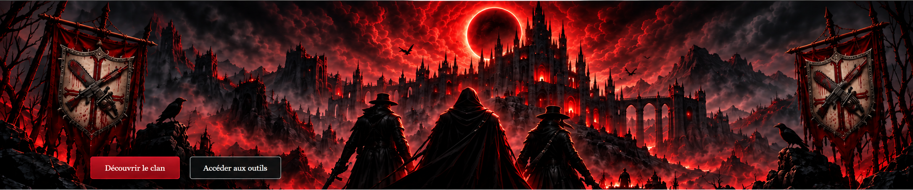

Outils
Analyseurs interactifs et calculateurs utiles pour BloodWars.
Accéder aux outils
Née de la réunion de Typhus 2, United for Honor et Souls of Shadows, Triarchia Noctis rassemble trois histoires, trois héritages et des années de combats sous une même bannière.
Ici, le passé n’est pas effacé : il est gravé dans le sang.
Trois héritages. Un seul sang. Un seul clan.
Tres Hereditates. Unus Sanguis. Una Gens.
Analyseurs interactifs et calculateurs utiles pour BloodWars.
Accéder aux outilsGuide officiel, aides de jeu et références sur les équipements et les armes.
Voir les guidesPrésentation, histoire, règlement, recrutement et suivi des zones de Triarchia Noctis.
Découvrir le clan